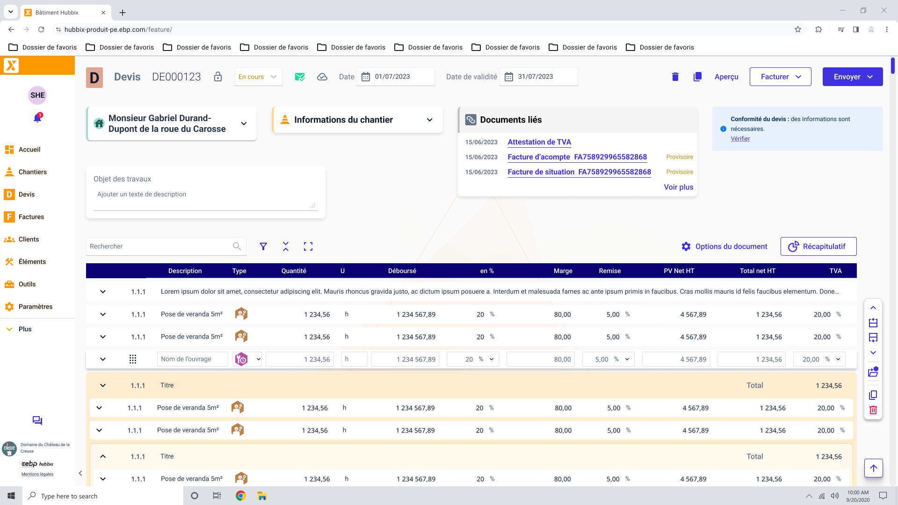
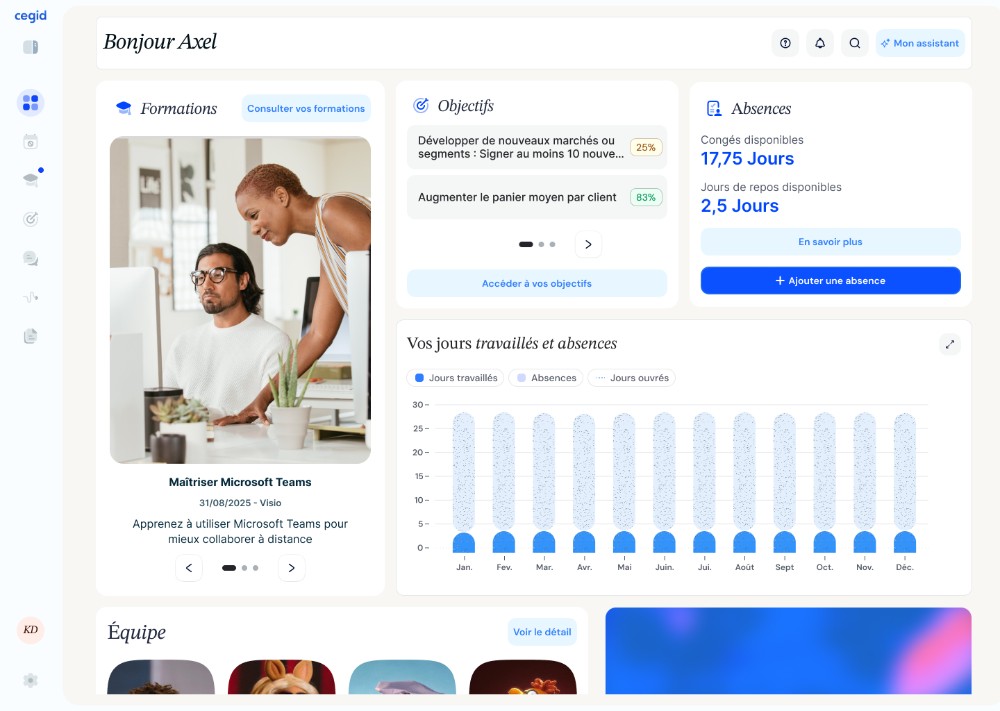
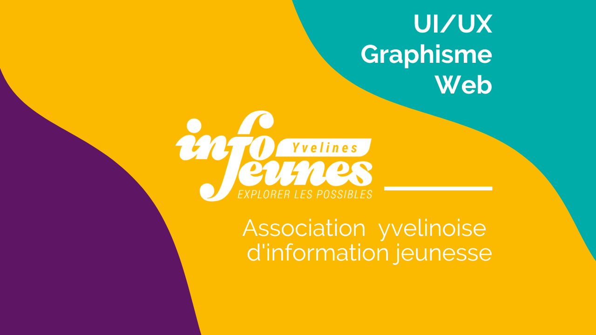

SaaS · EBP / Cegid
Hubbix Bâtiment
Facturation pensée pour les artisans du bâtiment — de la discovery au lancement.
6 ans d'expérience à piloter des produits SaaS de bout en bout — de la discovery au lancement — pour des équipes produit françaises et internationales, du SaaS de facturation à l'intégration d'agents IA.
Product Designer orienté product management, j'interviens sur tout le cycle de vie produit : compréhension du problème en discovery, conception, jusqu'à l'amélioration continue post-lancement. J'ai eu la chance de collaborer avec des équipes pluridisciplinaires françaises et internationales, et de piloter des projets IA — intégration d'un agent conversationnel, refonte des process design.
Mon leitmotiv : identifier le bon problème, apporter la bonne solution, l'évaluer et l'optimiser.



Product Designer orienté product management avec 6 ans d'expérience sur l'ensemble du cycle de vie produit — discovery, conception, amélioration continue — au service de la roadmap produit et des objectifs business.
Études de cas produit, du SaaS de facturation à l'intégration d'agents IA, ainsi que quelques projets freelance et explorations personnelles.
Créer un logiciel de facturation adapté au secteur du bâtiment (PME, artisans). Les outils existants étaient trop complexes, manquaient d'ergonomie et faisaient perdre du temps sur les tâches administratives.
UX/UI Designer sur 100% du cycle produit : 10 interviews utilisateurs, benchmark SaaS, wireframes et parcours, 5 tests utilisateurs, programme early adopters, UX Analytics (Microsoft Clarity, Heap), méthodologie agile avec PO/PM/devs/marketing.
Dashboard clair et hiérarchisé, navigation par parcours (devis → validation → facturation), UI sobre et professionnelle, contribution au design system (boutons, formulaires, alertes).

Intégrer des services bancaires embarqués accessibles sans quitter l'application, pour permettre aux artisans et commerçants de connecter leur logiciel de facturation à un compte pro.
Prototypage du parcours d'activation de compte pro, de son alimentation, et du parcours de règlement des factures. Co-conception de l'interface du chatbot IA avec le Product Manager et les développeurs.
Participation au groupe de travail sur l'adoption des assistants et agents IA par les clients dans des logiciels professionnels.
5 groupes de designers ont proposé un prototype incarnant la nouvelle marque Cegid. Après veille et conception, les 5 prototypes finaux ont été testés auprès de 100 testeurs avec l'aide d'un paneliste.
Comparaison des projets selon des critères établis (couleur, ergonomie...) pour identifier points de friction et éléments attractifs, et orienter les décisions de design à l'échelle du groupe.

Prototype d'application de mobilité intégrée : transition écologique, multimodalité et accessibilité territoriale, combinant transports publics, covoiturage et voiture partagée.
Réflexions sur la décarbonation, la sobriété énergétique et la fluidité des parcours. Volet accessibilité dédié : repenser l'expérience de mobilité pour les personnes en situation de handicap.

Refonte complète d'un site trop dense et daté. Maquettes Figma, interviews auprès de jeunes utilisateurs, développement WordPress. Prise en charge de la communication print et digitale (bannières, flyers, réseaux sociaux).

Conception d'un site responsive et accessible pour 3 publics (salariés, employeurs, représentants du personnel), identité de marque et plaquettes institutionnelles.
Amélioration du parcours de prise de rendez-vous et refonte de la carte interactive des centres d'accueil, avec optimisation du contenu pour le référencement.

Exploration de l'univers digital d'Hermès et Versace pour comprendre les codes visuels et l'expérience utilisateur du secteur du luxe et de la mode — comment le design sublime l'image de marque tout en optimisant les parcours clients.